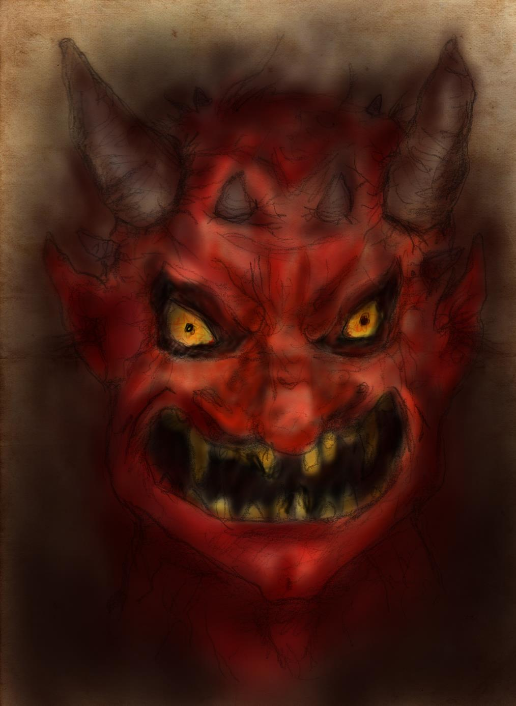

                <h1>Fotky</h1>
                                    <div id="clickable">
                        <a href="fotky1.html"><h2>Akon I:</h2></a>
                        <a href="fotky1.html"></a>

                        <a href="fotky2.html"><h2>Akon II:</h2></a>
                        <a href="fotky2.html"></a>

                        <a href="fotky3.html"><h2>Akon III:</h2></a>
                        <a href="fotky3.html"></a>

                        <a href="fotky4.html"><h2>Akon IV:</h2></a>
                        <a href="fotky4.html"></a>

			<a href="fotky5.html"><h2>Akon V:</h2></a>
                        <a href="fotky5.html"></a>
                    </div>
                    
                        <div id="galeria">
                                                    </div>
            </div>
        </div>
    